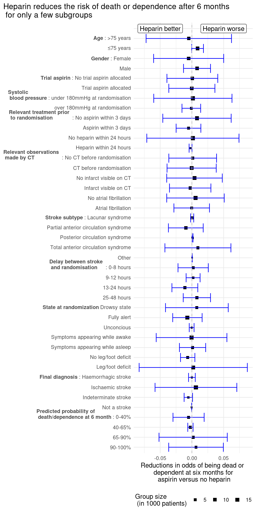
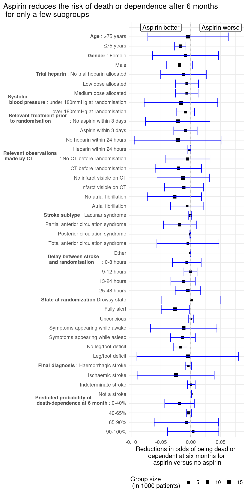

library("tidyverse")
library("here")05_analysis_1
Data Analysis
We want to investigate the apparent beneficial effect of the treatment by aspirin and heparin, divided into the different subgroups of the data. We will do that with inspiration from figure 2 in the original paper. The subgroups will be selected on the basis of the subgroups investigated in the original paper.
Loading libraries
Loading data
The augmented data will be loaded, but further processing of the data will be needed.
data <- read_tsv(here("data/03_dat_aug.tsv"))Heparin vs. Control Subgroup Analysis
We first want to investigate if there is a positive effect of treating stroke with heparin.
Data augmentation - Creating the desired subgroups
The data is preprocessed to have the groups which are also visible in figure 2 in the original paper, including dangerously high blood pressure, old age, the delay from stroke to randomization, if the patient were on aspirin before the study and other parameters. Some of the continious parameters are grouped into classes, e.g. the patient age. The heparin groups is augmented so that you either are in the heparin group or in the not heparin group - disregarding the Low or Medium dose. The outcome is grouped into dead/dependent, meaning that the patient is still hospitalized or dead after 6 months. The not recovered and recovered are grouped into an independent class as the ‘not recovered’ are still not hospitalized any more.
data_slim_heparin <- data |>
#One result heparin column is created, the low and medium doses of heparin are grouped together
mutate("Heparin" = case_when(
RXHEP == 'L' ~ 'Y',
RXHEP == 'M' ~ 'Y',
RXHEP == 'N' ~ 'N',
is.na(RXHEP) ~ NA)) |>
#The outcomes are grouped in dead/dependent and independent
mutate("Outcome" = case_when(
OCCODE == "dead" ~ "dead/dependent",
OCCODE == "dependent" ~ "dead/dependent",
OCCODE == "not recovered" ~ "independent",
OCCODE == "recovered" ~ "independent",
is.na(OCCODE) ~ NA
)) |>
#The delay from stroke to randomization is grouped into 0-8, 9-12, 13-24 or 25-48 hours
mutate("RDELAY_group" = case_when(
RDELAY <= 8 ~ "0-8h",
RDELAY <= 12 ~ "9-12h",
RDELAY <= 24 ~ "13-24h",
RDELAY <= 48 ~ "25-48h",
TRUE ~ NA)) |>
#The age is divided into 'old' (above 75 years) and young
mutate("AGE_group" = case_when(
AGE <= 75 ~ "≤75",
AGE > 75 ~ ">75"
)) |>
#The systolic blood pressure above 180 is subdivided into a group as this is defined as hypertensive crisis
mutate("RSBP_group" = case_when(
RSBP <= 180 ~ "≤180",
RSBP > 180 ~ ">180")) |>
#The expected death after 6 months is subdivded into 0-40%, 40-65%, 65-90% and 90-100%
mutate("EXPDD_group" = case_when(
EXPDD <= 0.4 ~ "0-40%",
EXPDD <= 0.65 ~ "40-65%",
EXPDD <= 0.90 ~ "65-90%",
EXPDD <= 1 ~ "90-100%")) |>
#Only the columns containing the subgroups interesting for this study is selected, as there are many other indicative columns of the study.
select(Heparin,Outcome,RXASP,RDELAY_group,SEX,AGE_group,RSLEEP,RCONSC,RATRIAL,RSBP_group,STYPE,RDEF3,RCT,RVISINF,DDIAG,RASP3,RHEP24,EXPDD_group)In the end we have nrow(data_slim_heparin) different datapoints, with information if the datapoint belong in ncol(data_slim_heparin)-2 different groups
Data augmentation - Calculating the statistics used in the plot
The data is modified to have one data frame for each subgroup nested together in the same data frame, where the original data frame has the noted group and subgroup. Thereby there is one data frame indicating for the individuals with and without heparin, what the outcome is after 6 months, and all the subgroup calculations can be handled at once.
data_nested_heparin <- data_slim_heparin |>
#All the different data subgroups are joined together
pivot_longer(cols = -c(Heparin,Outcome),
names_to = "group",
values_to = "subgroup") |>
drop_na() |>
#The data is grouped by the different subgroups to count the amount of dead/dependent or independent for with and without heparin
group_by(Heparin,Outcome,group,subgroup) |>
count() |>
#The data is scaled to reflect pr 1000 patients
mutate(n = n/1000) |>
#The data is nested into each subgroup for further processing
group_by(group,subgroup) |>
nest() |>
ungroup()The actual number of dead/dependent is calculated. With this information, the expected number of dead/dependent and the variance of each subgroup is calculated.
data_statistics_heparin <- data_nested_heparin |>
mutate(data = map(.x = data,
.f = ~ .x |>
pivot_wider(
names_from = Outcome,
values_from = n))) |>
#The number of dead/dependent in each subgroup is calculated by summing the number of dead/dependent for both treatment and non-treatment, and divided by the total number of patients in this group
mutate(Total_dead = map_dbl(.x = data,
.f = ~sum(.x |> pull(`dead/dependent`))),
Total_patients = map_dbl(.x = data,
.f = ~sum(.x |> pull(`dead/dependent`))+sum(.x |> pull(independent))),
Dead_rate = Total_dead / Total_patients) |>
#The expected deaths are caluculated as the total rate of dead/dependent times the number of patients for treatment and non-treatment
mutate(data = map2(.x = data,
.y = Dead_rate,
.f = ~ .x |>
mutate(Expected_deaths = .y*(`dead/dependent`+independent)))) |>
#The difference in the number of expected patients dead/dependent for treatment or non-treatment
mutate(E = map_dbl(.x = data,
.f = ~ .x |>
select(Heparin,Expected_deaths) |>
pivot_wider(
names_from = Heparin,
values_from = Expected_deaths) |>
mutate(difference = Y - N) |>
pull(difference))) |>
#The difference in the number of patients dead/dependent for treatment or non-treatment
mutate(O = map_dbl(.x = data,
.f = ~ .x |>
select(Heparin,`dead/dependent`) |>
pivot_wider(
names_from = Heparin,
values_from = `dead/dependent`) |>
mutate(difference = Y - N) |>
pull(difference))) |>
#The variance in each subgroup is calculated
mutate(V = map_dbl(.x = data,
.f = ~ .x |>
summarise(var = var(c(independent,`dead/dependent`))) |>
pull(var)))After the individual calculations for each subgroup, the adjusted benefit of being on the treatment is calculated along with the confidence intervals. The statisitic k = 0.207 was calculated in the original paper, and is used to adjust for multiple testing. The adjusted benefit per 1000 is calculated as $ = k*(O-E)$ , and the standard deviation calculated as \(= k*\sqrt{V}\)
k <- 0.207
alpha <- 0.99
data_CI_heparin <- data_statistics_heparin |>
#Adjusted benefit pr 1000 and standard deviation is calculated
mutate(Ad_ben = k*(O-E),
std_dev = k*sqrt(V),
# 99% confidence intervals calculated
CI_lower = Ad_ben - qnorm((1-alpha)/2)*std_dev,
CI_upper = Ad_ben + qnorm((1-alpha)/2)*std_dev) |>
#Group names are made to include both the group and the subgroup
unite(group_name, c(group,subgroup))Data Illustration
The group labels are created to actually explain which subgroup it is. As an example, DDIAG_DDIAGHA is changed to Final diagnosis: Haemorrhagic stroke, and RHEP24_Y is changed to Heparin within 24 hours prior to randomization.
The groups are changed in format to factor to control in which order they are plotted in the final plot
data_CI_ordered_heparin <- data_CI_heparin |>
mutate(group_name = factor(group_name,
levels = c("EXPDD_group_90-100%","EXPDD_group_65-90%","EXPDD_group_40-65%","EXPDD_group_0-40%","DDIAG_DNOSTRK","DDIAG_DDIAGUN","DDIAG_DDIAGISC","DDIAG_DDIAGHA","RDEF3_Y","RDEF3_N","RSLEEP_Y","RSLEEP_N","RCONSC_U","RCONSC_F","RCONSC_D","RDELAY_group_25-48h","RDELAY_group_13-24h","RDELAY_group_9-12h","RDELAY_group_0-8h","STYPE_OTH","STYPE_TACS","STYPE_POCS","STYPE_PACS","STYPE_LACS","RATRIAL_Y","RATRIAL_N","RVISINF_Y","RVISINF_N","RCT_Y","RCT_N","RHEP24_Y","RHEP24_N","RASP3_Y","RASP3_N","RSBP_group_>180","RSBP_group_≤180","RXASP_Y","RXASP_N","SEX_M","SEX_F","AGE_group_≤75","AGE_group_>75"), ordered = TRUE))The plot is created. The adjusted benefit per 1000 patients for each subgroup is illustrated with the confidence intervals.
p1 <- data_CI_ordered_heparin |>
ggplot(aes(x = Ad_ben,
y = group_name,
xmin = CI_lower,
xmax = CI_upper))+
geom_point(aes(size = Total_patients),shape = 15)+
geom_errorbarh(color = "blue")+
geom_vline(xintercept = 0, color = "grey", linetype = 2)+
scale_y_discrete(labels = full_labels_heparin)+
scale_size_continuous(range = c(1,3))+
labs(title = "Heparin reduces the risk of death or dependence after 6 months \n for only a few subgroups",
x = "Reductions in odds of being dead or \n dependent at six months for \n aspirin versus no heparin",
size = "Group size \n (in 1000 patients)")+
theme_minimal()+
theme(axis.title.y = element_blank(),
legend.position = "bottom",
plot.title.position = "plot")+
annotate("label", x=-0.05, y="", label= "Heparin better") +
annotate("label", x = 0.05, y="", label = "Heparin worse")
p1
It can first and foremost be seen on the figure, that there are not a very high reduction of odds for all of the subgroups, where the reduction of odds are in scales 0.01, meaning that 10 for every 1000 person odds are improved. This can be seen for the stroke subtype: Partial anterior circulation syndrome, there the odds on average are improved for 10/1000 patients. For many subgroups the odds are worsened, as e.g. for the ‘young’ subgroup with ages below 75, there the odds are on average worsened for 10/1000 patients.
Aspirin vs. Control Subgroup Analysis
Data augmentation - Creating the desired subgroups
The data is preprocessed similarly to before, but has aspirin as the group divider instead of heparin. The outcome is still grouped into dead/dependent, meaning that the patient is still hospitalized or dead after 6 months. The not recovered and recovered are grouped into an independent class as the ‘not recovered’ are still not hospitalized any more.
data_slim_aspirin <- data |>
mutate("Aspirin" = RXASP) |>
#The outcomes are gruped in dead/dependent and independent
mutate("Outcome" = case_when(
OCCODE == "dead" ~ "dead/dependent",
OCCODE == "dependent" ~ "dead/dependent",
OCCODE == "not recovered" ~ "independent",
OCCODE == "recovered" ~ "independent",
is.na(OCCODE) ~ NA
)) |>
#The delay from stroke to randomization is grouped into 0-8, 9-12, 13-24 or 25-48 hours
mutate("RDELAY_group" = case_when(
RDELAY <= 8 ~ "0-8h",
RDELAY <= 12 ~ "9-12h",
RDELAY <= 24 ~ "13-24h",
RDELAY <= 48 ~ "25-48h",
TRUE ~ NA)) |>
mutate("AGE_group" = case_when(
AGE <= 75 ~ "≤75",
AGE > 75 ~ ">75"
)) |>
#The systolic blood pressure above 180 is subdivided into a group as this is defined as hypertensive crisis
mutate("RSBP_group" = case_when(
RSBP <= 180 ~ "≤180",
RSBP > 180 ~ ">180")) |>
#The expected death after 6 months is subdivded into 0-40%, 40-65%, 65-90% and 90-100%
mutate("EXPDD_group" = case_when(
EXPDD <= 0.4 ~ "0-40%",
EXPDD <= 0.65 ~ "40-65%",
EXPDD <= 0.90 ~ "65-90%",
EXPDD <= 1 ~ "90-100%")) |>
#Only the columns containing the subgroups interesting for this study is selected, as there are many other indicative columns of the study. Heparin is also selected as a subgroup study here
select(Aspirin,Outcome,RXHEP,RDELAY_group,SEX,AGE_group,RSLEEP,RCONSC,RATRIAL,RSBP_group,STYPE,RDEF3,RCT,RVISINF,DDIAG,RASP3,RHEP24,EXPDD_group)Data augmentation - Calculating the statistics used in the plot
The data is once again modified to have a nested dataframe for each subgroup to be able to parallelize the calculations. The data is scaled to the unit pr 1000 patients.
data_nested_aspirin <- data_slim_aspirin |>
pivot_longer(cols = -c(Aspirin,Outcome), names_to = "group", values_to = "subgroup") |>
drop_na() |>
group_by(Aspirin,Outcome,group,subgroup) |>
count() |>
mutate(n = n/1000) |>
group_by(group,subgroup) |>
nest() |>
ungroup()The statistical calculations is calculated for aspirin as a grouping parameter.
data_statistics_aspirin <- data_nested_aspirin |>
mutate(data = map(.x = data,
.f = ~ .x |>
pivot_wider(
names_from = Outcome,
values_from = n))) |>
mutate(Total_dead = map_dbl(.x = data,
.f = ~sum(.x |> pull(`dead/dependent`))),
Total_patients = map_dbl(.x = data,
.f = ~sum(.x |> pull(`dead/dependent`))+sum(.x |> pull(independent))),
Dead_rate = Total_dead / Total_patients) |>
mutate(data = map2(.x = data,
.y = Dead_rate,
.f = ~ .x |>
mutate(Expected_deaths = .y*(`dead/dependent`+independent)))) |>
mutate(E = map_dbl(.x = data,
.f = ~ .x |>
select(Aspirin,Expected_deaths) |>
pivot_wider(
names_from = Aspirin,
values_from = Expected_deaths) |>
mutate(difference = Y - N) |>
pull(difference))) |>
mutate(O = map_dbl(.x = data,
.f = ~ .x |>
select(Aspirin,`dead/dependent`) |>
pivot_wider(
names_from = Aspirin,
values_from = `dead/dependent`) |>
mutate(difference = Y - N) |>
pull(difference))) |>
mutate(V = map_dbl(.x = data,
.f = ~ .x |>
summarise(var = var(c(independent,`dead/dependent`))) |>
pull(var)))The confidence intervals for the reduction in odds of being dead or dependent after six months are calculated
k <- 0.207
alpha <- 0.99
data_CI_aspirin <- data_statistics_aspirin |>
mutate(Ad_ben = k*(O-E),
std_dev = k*sqrt(V),
CI_lower = Ad_ben + qnorm((1-alpha)/2)*std_dev,
CI_upper = Ad_ben - qnorm((1-alpha)/2)*std_dev) |>
unite(group_name, c(group,subgroup))Data Illustration
First the group labels are to make an interpretable plot. The group labels are factored to have a fixed order of the labels on the plot axis.
The plot is created to illustrate the confidence intervals of the adjusted benefit of the aspirin treatment
p2 <- data_CI_ordered_aspirin |>
ggplot(aes(x = Ad_ben,
y = group_name,
xmin = CI_lower,
xmax = CI_upper))+
geom_point(aes(size = Total_patients),shape = 15)+
geom_errorbarh(color = "blue")+
geom_vline(xintercept = 0, color = "grey", linetype = 2)+
scale_y_discrete(labels = full_labels_aspirin)+
scale_size_continuous(range = c(1,3))+
labs(title = "Aspirin reduces the risk of death or dependence after 6 months \n for only a few subgroups",
x = "Reductions in odds of being dead or \n dependent at six months for \n aspirin versus no aspirin",
size = "Group size \n (in 1000 patients)")+
theme_minimal()+
theme(axis.title.y = element_blank(),
legend.position = "bottom",
plot.title.position = "plot")+
annotate("label", x=-0.05, y="", label= "Aspirin better") +
annotate("label", x = 0.05, y="", label = "Aspirin worse")
p2
The same pattern is observed for aspirin, where there is not a large reduction in odds for any subgroup nor a large number of subgroups where there are an observed reduction in odds. Though, for the age of <75 years, there are actually a reduction in odds compared to the heparin trial, but e.g. it does not seem to matter if a patient which are experiencing atrial fibrillation gets aspirin treatment or not.
Save the results
The results are saved as a png file
ggsave(filename = here("results/05_keyplot_1a.png"),
plot = p1,
dpi = 300,
bg = "white")
ggsave(filename = here("results/05_keyplot_1b.png"),
plot = p2,
dpi = 300,
bg = "white")